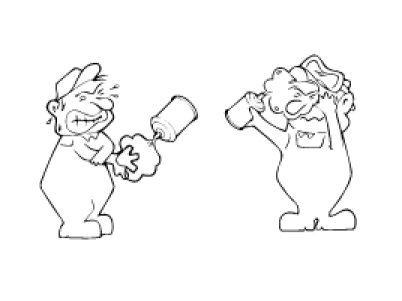
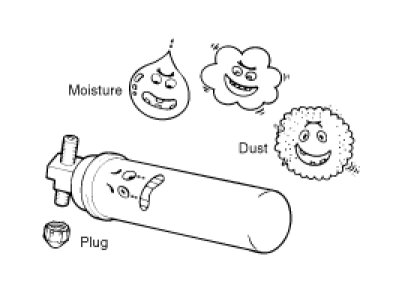
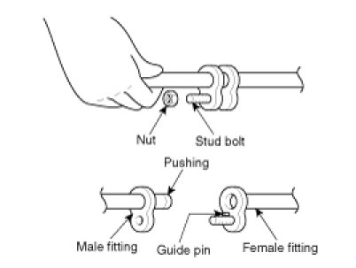
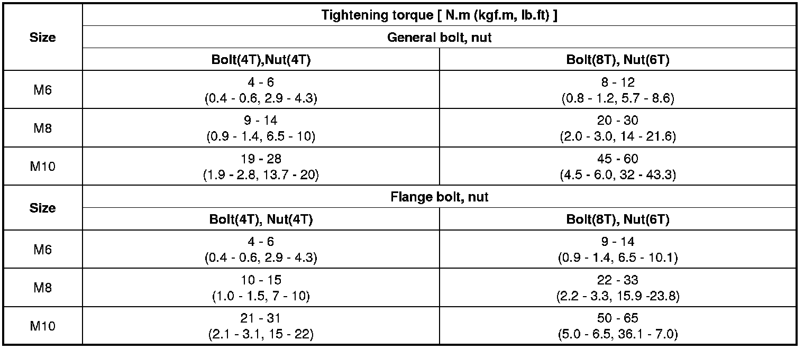

Heating and Air Conditioning: Service Precautions
Instructions
When Handling Refrigerant
1. R-134a liquid refrigerant is highly volatile. A drop on the skin of your hand could result in localized frostbite. When handling the refrigerant, be sure to wear gloves.
2. It is standard practice to wear goggles or glasses to protect your eyes, and gloves to protect your hands. If the refrigerant splashes into your eyes, wash them with clean water immediately.
3. The R-134a container is highly pressurized. Never leave it in a hot place, and check storage temperature is below 52°C (126°F).
4. An electronic leak detector should be used to check the system for refrigerant leakage. Bear in mind that the R-134a, upon coming into contact with flame, produces phosgene, a highly toxic gas.
5. Use only recommended lubricant for R-134a systems. If lubricants other than the recommended one used, system failure may occur.
6. PAG lubricant absorbs moisture from the atmosphere at a rapid rate, therefore the following precautions must be observed:
A. When removing refrigerant components from a vehicle, cap the components immediately to prevent entry of moisture.
B. When installing refrigerant components to a vehicle, do not remove the cap until just before connecting the components.
C. Complete the connection of all refrigerant tubes and hoses without delay to prevent the A/C system from taking on moisture.
D. Use the recommended lubricant from a sealed container only.
7. If an accidental discharge in the system occurs, ventilate the work area before resum of service.

When replacing parts ON A/C system
1. Never open or loosen a connection before discharging the system.
2. Seal the open fittings of components with a cap or plug immediately to prevent intrusion of moisture or dust.
3. Do not remove the sealing caps from a Replacement component until it is ready to be installed.
4. Before connecting an open fitting, always install a new sealing ring. Coat the fitting and seal with refrigerant oil before making the connection.

When Installing Connecting Parts
Flange With Guide Pin
Check the new O-ring for damage (use only the specified) and lubricate by using compressor oil. Tighten the nut to specified torque.


NOTE:
- T means tensile intensity, which is stamped on the head of bolt only numeral.
Handling tubing and fittings
The internal parts of the refrigeration system will remain in a state of chemical stability as long as pure moisture-free refrigerant and refrigerant oil are used. Abnormal amounts of dirt, moisture or air can upset the chemical stability and cause problems or serious damage.
The Following precautions must be observed
1. When it is necessary to open the refrigeration system, have everything you will need to service the system ready so the system will not be left open any longer than necessary.
2. Cap or plug all lines and fittings as soon as they are opened to prevent the entrance of dirt and moisture.
3. All lines and components in parts stock should be capped or sealed until they are ready to be used.
4. Never attempt to rebind formed lines to fit. Use the correct line for the installation you are servicing.
5. All tools, including the refrigerant dispensing manifold, the gauge set manifold and test hoses, should be kept clean and dry.